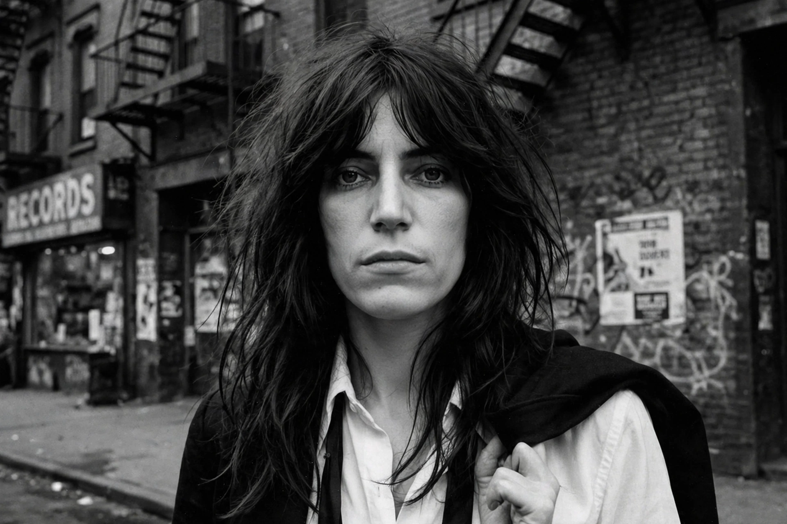

Patricia Lee Smith (born 30 December 1946) is an American singer, songwriter, poet and visual artist who became an influential figure in the New York City punk rock movement with her 1975 debut album Horses.

Smith moved to New York in 1967, performed poetry with guitarist Lenny Kaye, and formed the Patti Smith Group. Horses (1975), produced by John Cale with a Robert Mapplethorpe cover photograph, fused poetry and rock. She co-wrote "Because the Night" with Bruce Springsteen, a 1978 hit.
After a semi-retirement raising a family in Detroit with husband Fred "Sonic" Smith, she returned with Gone Again (1996). Her memoir Just Kids (2010), about her relationship with Mapplethorpe, won the National Book Award. She was inducted into the Rock and Roll Hall of Fame in 2007.